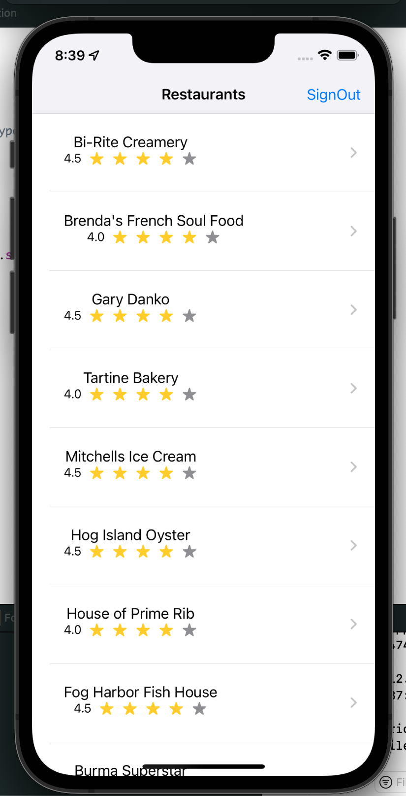

FoodVisor
Introducing "FoodVisor".
FoodVisor is for the foodies. The app suggests restaurants that are nearby a user's location. A user can see list of resturants and click on a resturant to see pcitures of the place and look at that place's reviews on Yelp.
We want to develop an app that would give users and easier experience in finding restaurants that they are interested in. Currently, it is hard to make a decision on what people want to eat due to there being too many options, especially on yelp and google maps. We are trying to give users a solution to this issue. Hence, we came up where we give a minimal information which would lead them to choose a place faster and easier.
The Yelp Fusion API allows its users to get local content and user reviews from millions of businesses of hospitality and service industries across 32 countries. Using the search end point, you are able to find businesses by keyword, location, category, open now - even price level!
Firebase was primary used to store user information. Information stored in firebase includes user profile pictures, user names, user emails, and user passwords. Firebase is also used to authenticate users. Although a custom sign in and sign up view was used, users must still have an account and login or sign up to read from the databse. No resturants will be shown if user is not signed or has not signed up.
FoodVisor was built for our Mobile App Development class in our senior year.
Technologies Used: SwiftUI, Firebase, Yelp API
FoodVisor Github: GitHub